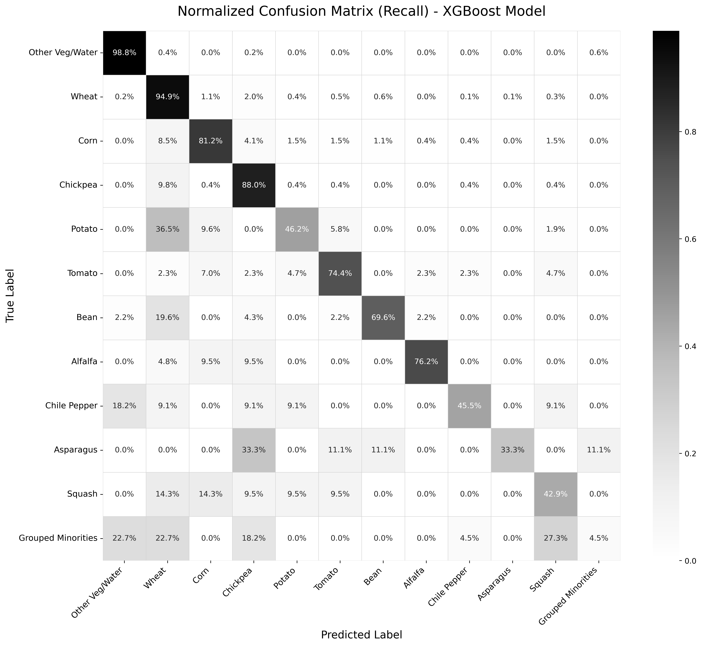
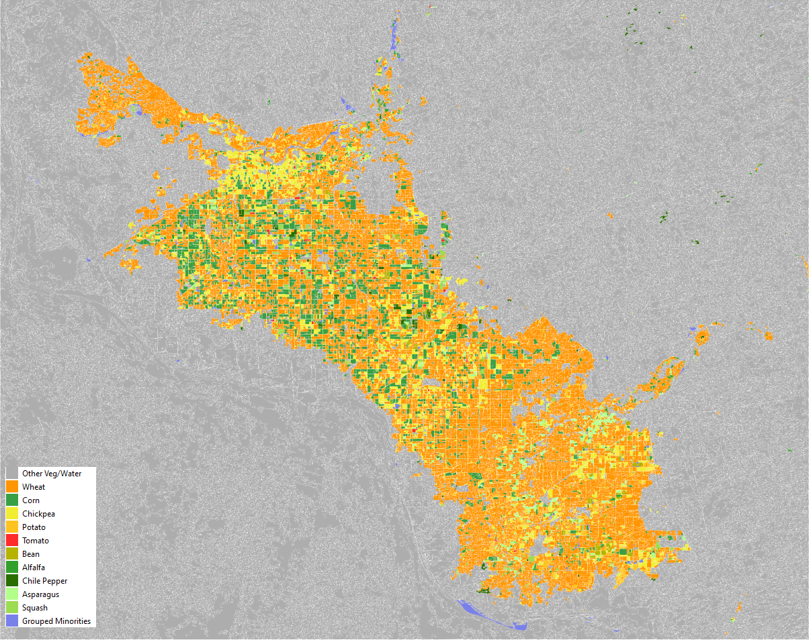

14 Crop classification in Mexico
14.1 Outline
This chapter contributes to the handbook’s goal of enhancing the operational use of Earth Observation (EO) in agricultural statistics by presenting a detailed, step-by-step classification exercise. While the potential of remote sensing is widely recognized, many National Statistical Offices (NSOs) still face challenges in transforming satellite data into reliable statistical products. To address this, we provide a didactic case study focused on crop classification in Mexico, designed to be fully reproducible by the user.
The exercise centers on the Yaqui Valley, a prominent agricultural region in Sonora, Mexico. The primary analysis period covers the autumn-winter agricultural season from October 2017 to May 2018. The workflow is built upon an Object-Based Image Analysis (OBIA) approach [1], [2], where machine learning models are trained to classify agricultural parcels rather than individual pixels. This method often yields more accurate and coherent results that better represent real-world field conditions.
The methodology leverages a fusion of open-access optical and radar satellite data [3]. We use the Harmonized Landsat and Sentinel-2 (HLS) product [4], [5], which provides analysis-ready, radiometrically consistent surface reflectance data, along with Sentinel-1 SAR imagery [6] to ensure data availability regardless of cloud cover. To facilitate the didactic and reproducible nature of this chapter, all necessary components—the pre-processed satellite imagery, the ground-truth labels used for training, and the complete Python code—are made available for download from a public repository. This allows the reader to focus entirely on understanding and replicating the classification process itself.
14.2 Methods
This section details the complete, step-by-step workflow for the crop classification exercise, from the initial data description to the final machine learning modeling.
14.2.1 Study Area and datasets
The methodology is demonstrated in the Yaqui Valley, located in the state of Sonora, Mexico. This area is one of the nation’s most productive agricultural regions, characterized by intensive, irrigated cultivation of crops such as wheat, corn, and vegetables, making it an ideal case study for classification techniques.
To ensure the exercise is fully reproducible, all required datasets are provided. The analysis relies on a fusion of publicly available optical and radar imagery covering the agricultural season from October 2017 to May 2018. The datasets include:
Optical Time-Series: A set of monthly, cloud-free composite images derived from the Harmonized Landsat and Sentinel-2 (HLS) collection [5]. Additionally, a single geometric median composite of the entire period is provided, which serves as the primary layer for image segmentation. Each image contains 13 bands, including surface reflectance and a suite of vegetation indices.
Radar Time-Series: A corresponding monthly time-series of Sentinel-1 Ground Range Detected (GRD) imagery [6]. Each monthly composite includes bands for VV and VH backscatter, as well as the calculated Radar Vegetation Index (RVI).
Ground-Truth Data: A shapefile containing georeferenced sample points used for training and validating the models. This information is derived from administrative records of the Agrifood and Fisheries Information Service (SIAP) of Mexico [7].
14.2.2 Image segmentation for parcel delineation
The first step in our analytical workflow is to transition from a pixel-based to an Object-Based Image Analysis (OBIA) approach. This process, known as image segmentation, aggregates pixels into homogeneous regions that are intended to correspond to real-world features. For this agricultural application, the fundamental unit of analysis is shifted from the individual pixel to the image object or segment, which represents a potential agricultural parcel.
For this task, the Shepherd Segmentation algorithm from the RSGISLib library was employed [8]. This algorithm was applied to the high-quality, multi-band geometric median composite described previously. The method is a two-stage process: it first uses a k-means clustering to group pixels based on their spectral similarity, and then iteratively merges these small clusters into larger, spatially contiguous segments. Key parameters used in this process were:
- Number of Clusters: The process was initialized with 80 spectral clusters to capture the initial variability.
- Input Bands: All 13 bands of the composite image (six optical and seven vegetation indices) were used, providing a rich spectral basis for clustering.
- Minimum Segment Size: A minimum size of 100 pixels was enforced to eliminate small, noisy polygons and ensure that the final objects are representative of field parcels.
The final output of this step is a vector shapefile containing the delineated polygons. It is important to acknowledge that as an automated process, the segmentation may not perfectly align with all real-world field boundaries, and some inaccuracies from under- or over-segmentation can occur, particularly in complex landscapes. Nevertheless, these generated objects form the foundational units for all subsequent labeling and feature extraction steps.
14.2.3 Ground-Truth labeling and quality control
Once the agricultural parcels were delineated, the next critical step was to assign a known crop type to each segment using the ground-truth data. This was achieved through a spatial join [9], a standard GIS operation that overlays the georeferenced sample points derived from SIAP administrative records onto the polygon layer. This process transfers the crop label from each point to the larger parcel segment that contains it.
However, an initial join can result in ambiguity; a single polygon might intersect with points corresponding to multiple different crop types, or with no points at all. To create a reliable dataset for model training, a strict quality control filter was therefore applied to the joined data. The rule for this filter was to retain only those polygons that were unambiguously labeled—that is, polygons that contained sample points corresponding to one, and only one, unique crop type.
This filtering protocol is crucial for improving the purity of the training data. Any polygon that contained no sample points (unlabeled) or was associated with conflicting crop labels (ambiguously labeled) was discarded from the final dataset. The output of this stage is a clean shapefile of high-confidence parcels, each with a single, verified class label, which serves as the definitive ground truth for the subsequent feature extraction and modeling phases.
14.2.4 Time-Series Feature Engineering
The final data preparation step involves feature engineering, where a comprehensive set of quantitative attributes is generated for each delineated parcel. This feature set is designed to capture the unique temporal and spectral signatures of each crop type, which the machine learning model will use to perform the classification. The central data structure for this process is the Raster Attribute Table (RAT) associated with the segmentation file, which is progressively populated with new attributes.
The process is executed using the zonal statistics [10] capabilities of the rsgislib library. First, the RAT is populated with class proportion information derived from the ground-truth labels raster. This initial step calculates, for each segment, the percentage of its area corresponding to each crop class.
Subsequently, the RAT is further enriched with a much larger set of features derived from the entire time-series of satellite imagery. For each band of every monthly composite—both the optical HLS and radar Sentinel-1 images—a set of descriptive statistics is computed for each parcel. These statistics include the mean, standard deviation, minimum, and maximum pixel values within the parcel’s boundary.
The result of this stage is a highly detailed data table within the RAT, where each row represents a single parcel and the columns contain its complete phenological and structural profile. This profile captures not only the average spectral response of the parcel over time (the mean values) but also its internal heterogeneity or texture (the standard deviation). This final feature table is then exported as a CSV file, creating the analysis-ready dataset for the machine learning workflow.
14.2.5 Machine Learning Modeling
The final stage of the methodology focuses on training and selecting the optimal classification model using the comprehensive feature set generated in the previous steps. To streamline this process, this exercise utilizes PyCaret [11], an open-source, low-code Automated Machine Learning (AutoML) library in Python. PyCaret was chosen for its ability to efficiently automate the entire experimental workflow, from data preprocessing to model comparison and selection.
Before initiating the AutoML experiment, two critical data preparation steps were performed. First, to address the severe class imbalance in the dataset, any crop class with fewer than 10 representative samples was aggregated into a single ‘Grouped Minorities’ category. This pragmatic approach creates a more stable class distribution for the models to learn from. Second, the dataset was partitioned into a 70% training set and a 30% testing set using stratified sampling. This ensures that the proportional representation of each class is preserved in both subsets, which is crucial for obtaining an unbiased evaluation of model performance.
The PyCaret setup() function was then used to configure the experiment, establishing a pipeline of automated preprocessing steps that are applied during model training and evaluation. This included robust feature scaling, automated feature selection to identify the 50 most predictive variables from the high-dimensional dataset, and an additional balancing technique (RandomOverSampler) [13] applied to the training folds within the cross-validation loop. Model performance was evaluated using a 5-fold stratified cross-validation strategy to ensure robust and reliable results.
Finally, the compare_models() function was executed to systematically train and evaluate a wide range of classification algorithms. The results identified the Extreme Gradient Boosting (XGBoost) [14] model as the top performer, achieving the highest cross-validated accuracy of 89.5%. This winning model, along with its complete preprocessing pipeline, was then saved for generating the final results presented in the following section.
14.3 Results
This section presents the performance of the final classification model, Extreme Gradient Boosting (XGBoost), on the independent test set. The model yielded an overall accuracy of 89.5%.
A detailed breakdown of the model’s performance is provided in the classification report (Table 14.1). The weighted average F1-score, which accounts for class imbalance, was 0.896. The results show a performance disparity between classes. The model achieved high recall scores for majority classes such as Wheat (94.9%) and Other Veg/Water (98.8%), while recall was significantly lower for minority classes, including the Grouped Minorities category (4.5%).
| Class Name | Precision | Recall | F1-Score | Support |
|---|---|---|---|---|
| Other Veg/Water | 0.978 | 0.988 | 0.983 | 494 |
| Wheat | 0.941 | 0.949 | 0.945 | 1509 |
| Chickpea | 0.777 | 0.880 | 0.826 | 234 |
| Corn | 0.870 | 0.812 | 0.840 | 271 |
| Alfalfa | 0.842 | 0.762 | 0.800 | 21 |
| Tomato | 0.604 | 0.744 | 0.667 | 43 |
| Bean | 0.711 | 0.696 | 0.703 | 46 |
| Potato | 0.571 | 0.462 | 0.511 | 52 |
| Chile Pepper | 0.500 | 0.455 | 0.476 | 11 |
| Squash | 0.486 | 0.429 | 0.456 | 42 |
| Asparagus | 0.750 | 0.333 | 0.462 | 9 |
| Grouped Minorities | 0.200 | 0.045 | 0.074 | 22 |
| Weighted Avg | 0.895 | 0.899 | 0.896 | 2754 |
To visually assess the model’s behavior, the normalized confusion matrix is presented in Figure 14.1. The strong diagonal, with recall values of 98.8% for Other Veg/Water and 94.9% for Wheat, confirms the model’s high accuracy for the majority classes. However, the off-diagonal values highlight specific areas of confusion. For instance, Potato is frequently misclassified as Corn (36.5% of the time), and a notable portion of Onion samples are also confused with Corn (19.6%). This suggests that these crops may share similar spectral profiles at certain growth stages within the analyzed period. As expected, the model struggles most with the Grouped Minorities class, which has a recall of only 4.5% and is primarily confused with the dominant Wheat and Other Veg/Water classes.
Finally, the trained model can be applied to all delineated parcels in the study area to produce the final crop classification map for the 2017-2018 agricultural season (an example is shown in Figure 14.2).

14.4 Discussion
The application of a combined optical-radar, object-based approach with an XGBoost model yielded an overall accuracy of 89.5% on the independent test set. The model’s recall for majority classes, such as Wheat (94.9%) and Other Veg/Water (98.8%), corresponds to their distinct spectral signatures and the large number of available training samples.
In contrast, the model’s performance was lower for classes with fewer training samples. The detailed classification report (Table 14.1) shows recall values of 33.3% for Asparagus and 4.5% for the aggregated Grouped Minorities category. This performance gap is directly related to the class imbalance in the training data. An insufficient number of examples can limit a model’s ability to learn a generalizable signature for minority classes, potentially leading to a bias towards better-represented classes.
The confusion matrix (Figure 14.1) provides further detail on specific inter-class confusion. For example, a portion of Potato parcels were misclassified as Corn. A possible explanation for this is that these crops may share similar phenological profiles or spectral characteristics during key moments of the analyzed growing season. This represents a classification challenge that is both statistical and agronomic in nature.
From a practical standpoint for National Statistical Offices (NSOs), the open-source workflow presented here offers a methodology for mapping dominant crops, which are often of primary interest for food security monitoring. The results from this exercise also underscore that the quality, quantity, and balance of ground-truth data are determining factors that influence the performance of supervised classification models.
14.5 Conclusion and future work
This chapter presented a reproducible, open-source workflow for crop classification in a major agricultural region of Mexico. The methodology, which combines an object-based approach with an XGBoost model trained on multi-sensor time-series features, yielded an overall accuracy of 89.5% for mapping dominant crops. A key observation from the results is that model performance is influenced by the quality and class balance of the ground-truth data, as shown by the lower recall values for minority crop types.
The current results can serve as a baseline for further research. One direction for future work is to explore deep learning architectures capable of learning directly from temporal data, as an alternative to relying on pre-computed statistical features. The preliminary experiments conducted as part of this study indicate potential research directions in this area.
One avenue for investigation is the use of 1D Convolutional Neural Networks (1D-CNNs) [15] to automatically extract features from sequential data like vegetation index time-series. A further area for investigation is the fusion of optical and radar data within the deep learning model structure itself. A different approach is to develop dual-input hybrid models [16]. Such an architecture can process temporal data through a 1D-CNN or LSTM branch while simultaneously processing static, season-long features through a parallel MLP branch, allowing the model to learn from both dynamic and stable parcel characteristics. A systematic evaluation of these deep learning approaches could determine their potential to increase classification accuracy for NSO applications.
References
[1]
T. Blaschke, “Object based image analysis for remote sensing,” {ISPRS} Journal of Photogrammetry and Remote Sensing, vol. 65, no. 1, pp. 2–16, 2010.
[2]
B. Dezso et al., “Object-based image analysis in remote sensing applications using various segmentation techniques,” vol. 37, pp. 103–120, 2012.
[3]
A. Orynbaikyzy, U. Gessner, and C. Conrad, “Crop type classification using a combination of optical and radar remote sensing data: A review,” International Journal of Remote Sensing, vol. 40, no. 3, pp. 1–43, 2019, doi: 10.1080/01431161.2019.1569791.
[4]
J. Ju et al., “The harmonized landsat and sentinel-2 version 2.0 surface reflectance dataset,” Remote Sensing of Environment, vol. 324, p. 114723, 2025, doi: 10.1016/j.rse.2025.114723.
[5]
J. Ju et al., Harmonized landsat sentinel-2 (HLS) product user guide. NASA/USGS, 2022.
[6]
M. Shorachi, V. Kumar, and S. C. Steele-Dunne, “Sentinel-1 SAR backscatter response to agricultural drought in the netherlands,” Remote Sensing, vol. 14, no. 10, p. 2435, 2022, doi: 10.3390/rs14102435.
[7]
Geospatial World, “The geospatial technology in the agrifood and fisheries information service (SIAP), méxico,” 2014, [Online]. Available: https://geospatialworld.net/article/the-geospatial-technology-in-the-agrifood-and-fisheries-information-service-siap-mexico/.
[8]
D. Clewley et al., “A python-based open source system for geographic object-based image analysis (GEOBIA) utilizing raster attribute tables,” Remote Sensing, vol. 6, no. 7, pp. 6111–6135, 2014, doi: 10.3390/rs6076111.
[9]
P. A. Longley, M. F. Goodchild, D. J. Maguire, and D. W. Rhind, Geographic information science and systems. John Wiley & Sons, 2015.
[10]
S. Winsemius and J. Braaten, “Zonal statistics,” in Cloud-based remote sensing with google earth engine, Springer, 2024, pp. 463–485.
[11]
M. Ali, “PyCaret: An open source, low-code machine learning library in python.” https://pycaret.readthedocs.io/en/latest/, 2020, [Online]. Available: https://www.pycaret.org.
[12]
N. V. Chawla, K. W. Bowyer, L. O. Hall, and W. P. Kegelmeyer, “SMOTE: Synthetic minority over-sampling technique,” Journal of Artificial Intelligence Research, vol. 16, no. 1, pp. 321–357, 2002.
[13]
A. Crudu and MoldStud Research Team, “Strategies and resources for successfully tackling class imbalance in classification challenges,” MoldStud Articles, 2025, [Online]. Available: https://moldstud.com/articles/p-strategies-and-resources-for-successfully-tackling-class-imbalance-in-classification-challenges.
[14]
T. Chen and C. Guestrin, “XGBoost: A Scalable Tree Boosting System,” in Proceedings of the 22nd ACM SIGKDD International Conference on Knowledge Discovery and Data Mining, 2016, pp. 785–794, doi: 10.1145/2939672.2939785.
[15]
S. Guessoum et al., “The short-term prediction of length of day using 1D convolutional neural networks (1D CNN),” Sensors, vol. 22, no. 23, p. 9517, 2022, [Online]. Available: https://www.mdpi.com/1424-8220/22/23/9517.
[16]
S. Saidi, S. Idbraim, Y. Karmoude, A. Masse, and M. Arbelo, “Deep-learning for change detection using multi-modal fusion of remote sensing images: A review,” Remote Sensing, vol. 16, no. 20, p. 3852, 2024, doi: 10.3390/rs16203852.